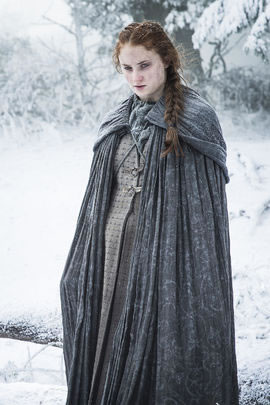

Sansa Stark is the eldest daughter and second child of Lady Catelyn and Lord Eddard Stark. Eddard is the head of House Stark and Lord Paramount of the North. The North is one of the constituent regions of the Seven Kingdoms and House Stark is one of the Great Houses of the realm. House Stark rules the region from their seat ofWinterfell and Eddard also holds the titles of Lord of Winterfell and the Warden of the North to King Robert Baratheon.[2]
Sansa was born and raised at Winterfell. She has an older brother, Robb, two younger brothers, Bran and Rickon, a younger sister, Arya and a bastard half-brother, Jon Snow. Sansa enjoys proper "lady-like" pursuits, and is good at sewing, embroidering, poetry, singing, dancing, literature and music. She dreams of being a regal Queen like Cersei Lannister, and that just like in the epic songs she will meet her knight in shining armor. She has inherited her mother's Tully coloring, unlike most of her siblings, and Lady Catelyn thinks Sansa will be even more beautiful than she was when she was younger. She is often seen in contrast with her sister, Arya Stark who has neither her looks nor her accomplishments in feminine activities and comportment.[3]
